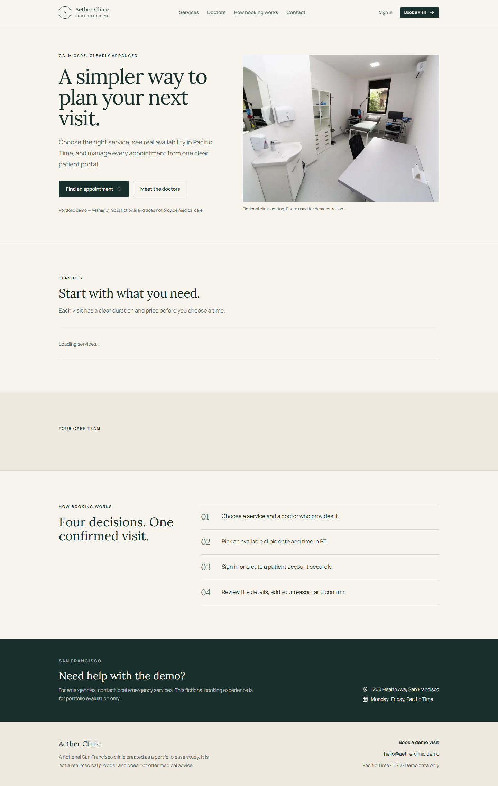
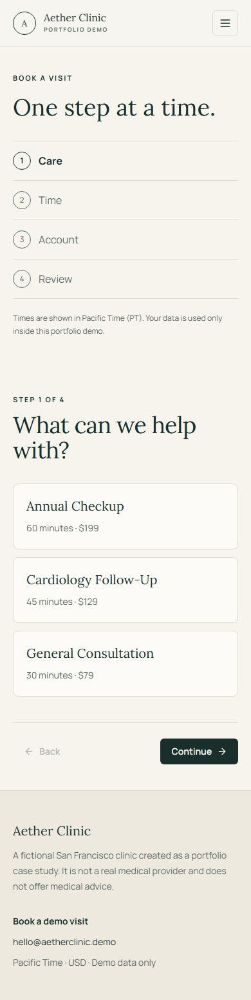
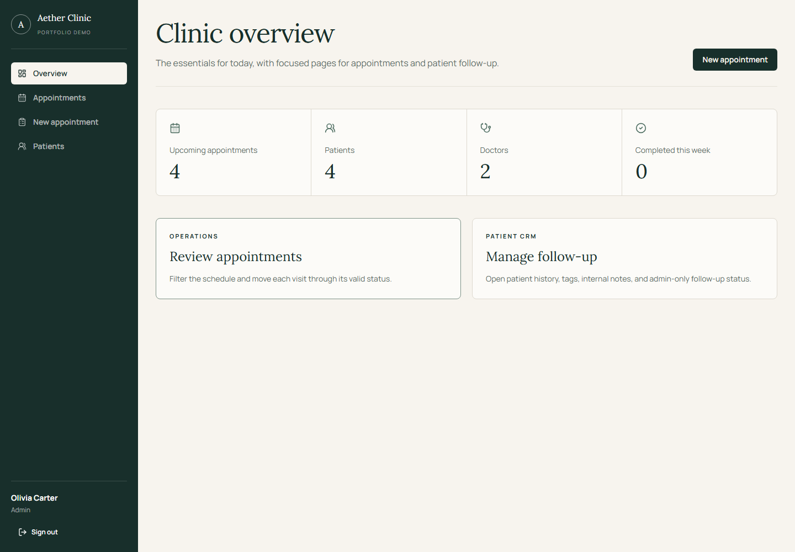
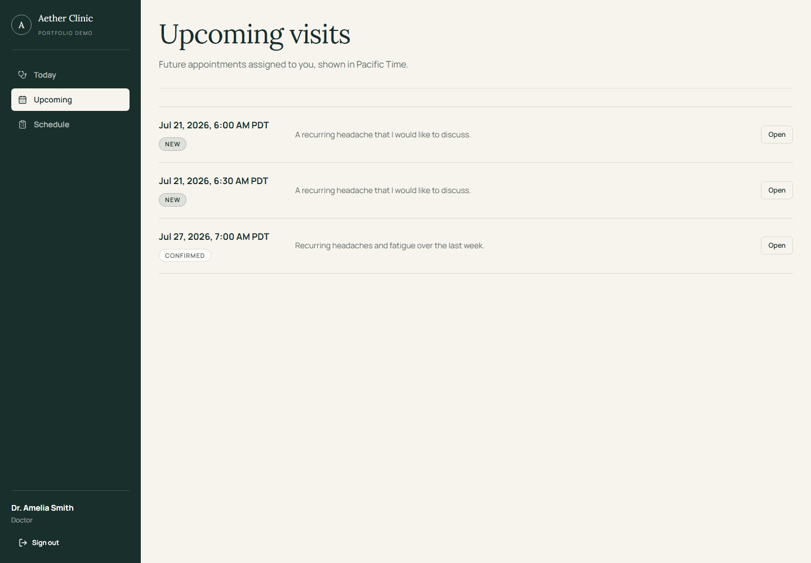
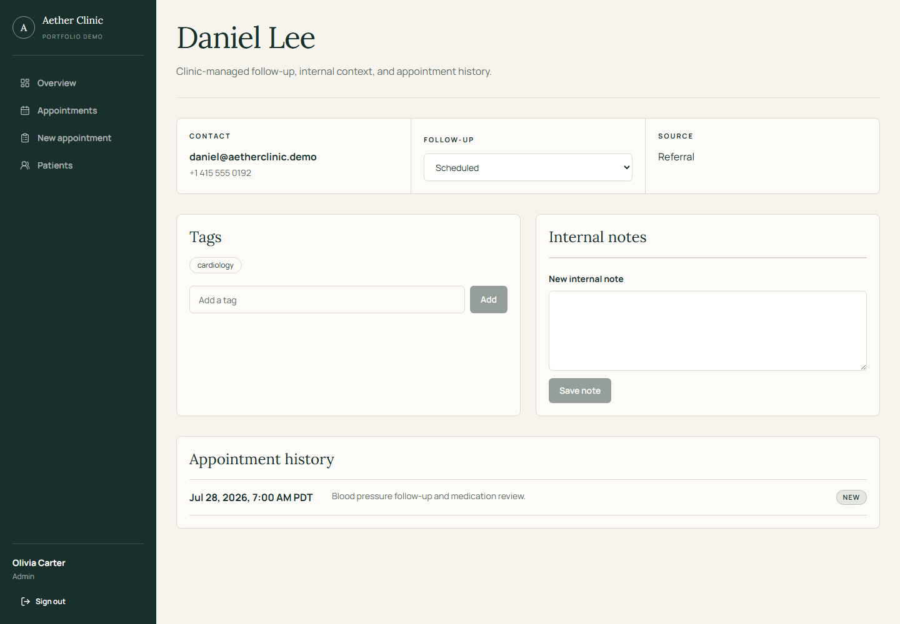

Slot-based booking
Patients select a compatible doctor and a real available time in Pacific Time, then receive a concise visit reference.
Appointment management, thoughtfully arranged
Aether Clinic brings booking, schedules, patient records, and follow-up into focused spaces for patients, doctors, and clinic staff.
Built around the day-to-day
Patients select a compatible doctor and a real available time in Pacific Time, then receive a concise visit reference.
Administrators, doctors, and patients each get navigation and actions that match their responsibilities.
Rescheduling creates a linked record instead of overwriting the original appointment. Cancellations stay separate from visit reasons.
Same-origin HttpOnly sessions, CSRF checks, explicit role rules, and predictable API errors keep workflow boundaries clear.
Simple by design
Appointment times are interpreted in America/Los_Angeles and stored in UTC, including daylight-saving boundaries.
A closer look





Start here
Clone the repository, copy the environment examples, then start the frontend and API together with Docker Compose.
git clone https://github.com/MaryanKostrubyak/li-site.git
cd li-site
cp backend/.env.example backend/.env
cp frontend/.env.example frontend/.env
docker compose up --buildOpen http://localhost:3000. The repository README includes local setup, test commands, and sample accounts.